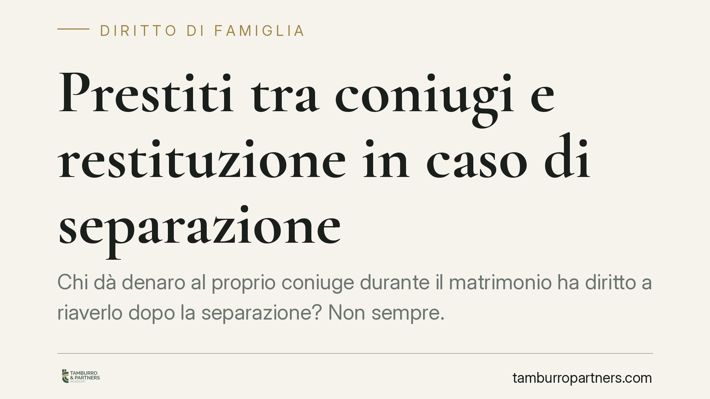

Prestiti tra coniugi e restituzione in caso di separazione
Chi dà denaro al proprio coniuge durante il matrimonio ha diritto a riaverlo dopo la separazione? Non sempre. Molto dipende dalla natura dell'operazione: un prestito vero e proprio va restituito, mentre un contributo ai bisogni della famiglia no. La differenza sta quasi tutta nella prova. Ecco cosa dice il codice civile e come organizzare la documentazione.

Il nodo: prestito o contributo alla famiglia?
Quando finisce una relazione coniugale, capita spesso che uno dei due chieda indietro somme versate all'altro durante gli anni di vita comune. La risposta a chi debba restituire cosa non è automatica: dipende dalla qualificazione giuridica dell'esborso.
Due sono gli scenari tipici. Nel primo, il denaro è stato dato a titolo di mutuo, cioè di prestito da restituire (art. 1813 cod. civ.). Nel secondo, la somma rappresenta un contributo ai bisogni della famiglia, che il coniuge versa in adempimento del dovere di assistenza e collaborazione previsto dall'art. 143 cod. civ. In questa seconda ipotesi non c'è nulla da restituire, perché non si tratta di un prestito ma dell'adempimento di un obbligo coniugale.
Inquadramento normativo
L'art. 1813 cod. civ. definisce il mutuo come il contratto con cui una parte consegna all'altra una somma di denaro, che l'altra si obbliga a restituire. Perché sorga l'obbligo di restituzione occorre, quindi, dimostrare che le parti avevano concordato proprio uno schema di prestito.
Sul fronte opposto opera l'art. 143 cod. civ., che pone a carico di ciascun coniuge l'obbligo di contribuire ai bisogni della famiglia in relazione alle proprie sostanze e capacità. Le somme versate in questa cornice non generano un credito restitutorio. Va inoltre ricordato l'art. 160 cod. civ., che vieta agli sposi di derogare ai diritti e ai doveri previsti dalla legge per effetto del matrimonio: non si può, cioè, trasformare artificiosamente in prestito ciò che è per legge un dovere di contribuzione.
Quanto alla possibilità di legare la restituzione a un evento futuro, come la separazione, un contratto può essere sottoposto a condizione (evento futuro e incerto da cui dipendono gli effetti). L'art. 1354 cod. civ. stabilisce però che è nullo il contratto al quale è apposta una condizione impossibile o contraria a norme imperative, all'ordine pubblico o al buon costume. La condizione illecita si coordina con la disciplina generale della causa e del motivo illecito (artt. 1343-1345 cod. civ.). In concreto: una clausola che condizioni la restituzione del prestito al fatto della separazione non è, di per sé, illecita, purché non miri a incidere sui doveri coniugali inderogabili.
*Nota per la redazione: gli specifici precedenti di legittimità richiamati nella fonte vanno verificati negli estremi (numero e anno) prima della pubblicazione; in assenza di riferimento certo si è preferita la formula neutra.*
Cosa cambia in pratica
La questione decisiva, nella maggior parte dei casi, non è teorica ma probatoria. Chi chiede indietro il denaro deve dimostrare che si trattava di prestito e non di liberalità o di contribuzione familiare. In mancanza di prova scritta, il giudice può ricostruire la natura dell'operazione dagli elementi disponibili, ma il rischio di non riuscire a provare il credito è concreto.
Da qui una regola di prudenza: se si presta denaro al partner, conviene formalizzare l'accordo. Una scrittura privata che qualifichi la somma come prestito, indichi tempi e modalità di restituzione ed eventuali condizioni, riduce drasticamente le incertezze successive.
Discorso analogo per la restituzione condizionata alla separazione. Secondo un'impostazione, è opportuno che la volontà di legare la restituzione a un determinato evento risulti in modo chiaro dall'atto e, dove la separazione sia consensuale, che la posta creditoria venga espressamente regolata nell'accordo destinato all'omologazione. Si tratta di cautele operative, non di regole automatiche: la valutazione va fatta caso per caso.
Cosa fare in concreto
- Formalizza il prestito per iscritto. Redigi una scrittura privata che qualifichi espressamente la somma come mutuo ai sensi dell'art. 1813 cod. civ., con importo, scadenza e modalità di restituzione.
- Dai data certa all'atto. Ricorri a strumenti che rendano opponibile la data (ad esempio marca temporale o registrazione), così da evitare contestazioni successive.
- Rendi tracciabili i pagamenti. Effettua i versamenti tramite bonifico con causale chiara ("prestito", con riferimento all'accordo), evitando contanti e movimentazioni non documentate.
- Distingui prestito e contribuzione. Tieni separati i versamenti destinati ai bisogni familiari da quelli che intendi recuperare: la confusione tra le due voci indebolisce la posizione di chi chiede la restituzione.
- In sede di separazione consensuale, regola il credito nell'accordo. È opportuno che l'eventuale posta creditoria sia inserita e definita nell'accordo destinato all'omologazione.
Disclaimer
Contributo informativo a cura di Tamburro & Partners - Avv. Giuseppe Tamburro. Non costituisce parere legale.
Ogni famiglia ha il suo equilibrio.
Separazione, divorzio, affidamento, assegno: se vuoi un confronto riservato su una specifica situazione, scrivi allo studio. Ti rispondiamo entro un giorno lavorativo.